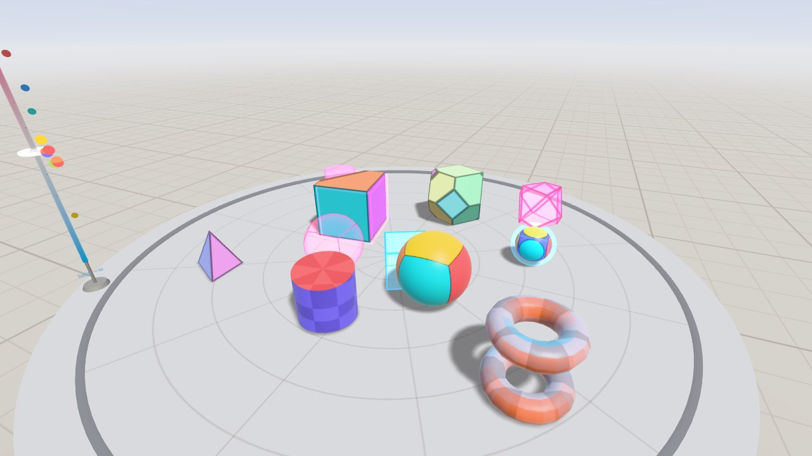
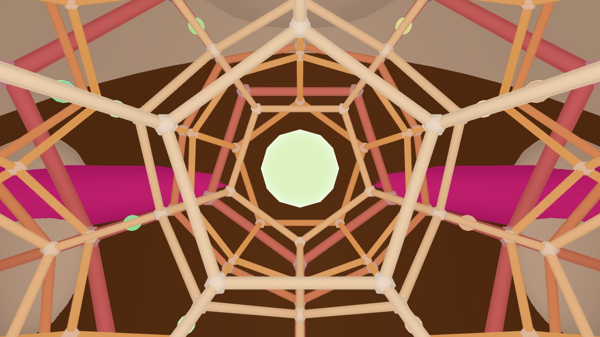

About 4D VR
4D VR is a WebXR app for viewing and interacting with 4D objects and non-Euclidean space. Built with Three.js for the Meta Quest with hand tracking. Controllers work too, and every scene runs in a desktop browser with a mouse and keyboard or on a phone.

It's free and runs in the browser, so there's nothing to install. On a Quest, open it in the Quest Browser and press Enter VR.
Scenes
- Hyperplay: a 4D physics sandbox on a table. Objects like the tesseract, hyperspheres, and duocylinders are shown as 3D cross-sections, and you can move the slice along the fourth axis (w) or rotate it. There are presets for things like getting a ball out of a sealed box through w, dice made from the regular 4-polytopes, and orbits under 4D gravity, which are never stable.
- Polytope Lab: the regular 4-polytopes as projections you can rotate through 4D, with the current cross-section drawn inside. Also a tesseract net that folds up. More on the 120-cell page.
- Knot Lab: a rope simulated in 4D. Strands only collide when they're close in all four coordinates, so moving one in w lets it pass through another and untie the knot.
- Hopf Garden: the Hopf fibration of the 3-sphere. Touch the globe to add the circle for that point. More on the Hopf fibration page.
- Hyperbolic Space: the {5,3,4} and {4,3,5} honeycombs seen from inside. More on the hyperbolic space page.
- Spherical Space: the 120-cell and other polytopes as tilings of the 3-sphere, seen from inside. Far away straight ahead is the back of your own head.
- Klein Room: a room glued to itself like a Klein bottle. Walk out the front and you come back in the back mirror-reversed. More on the Klein bottle page.
- Quasicrystals: a Penrose tiling as a 2D slice of the 5D cubic lattice, and a 3D tiling as a slice of the 6D lattice. Moving the slice rearranges the tiles but the pattern never repeats.
Controls
The first time Hyperplay opens in VR, a short tutorial goes through grabbing, moving the slice, rotating through 4D, and opening the menu. The other scenes use the same grabs and gestures for their own things, and each scene's page in the menu says what they do there.
Hand tracking: pinch with your thumb and index finger to grab, move, and throw things. Pinch with your middle finger and move your hand to rotate an object through 4D.
Pinch empty space and move up or down to move the slice along w. Turn a palm towards your face and tap the Menu button next to it with your other hand.
Controllers: trigger or grip to grab. Hold both to rotate through 4D. Push a stick up or down to move the slice, or left and right to rotate it. A or X opens the menu.
Desktop: left drag to grab and throw. Right drag to rotate through 4D. Use the scroll wheel or Q/E to move the slice, 1-8 to switch scenes, M for the menu, and H for the controls. In the curved spaces and the Klein Room, use WASD to move and drag to look.
Touch: drag with one finger to grab things and orbit the camera. A two-finger drag does what a right drag does.
How It Works
4D objects are stored as tetrahedral meshes of their 3D boundary, the same approach 4D Toys uses. The slicing happens on the GPU. Each tetrahedron becomes a triangle, a quad, or nothing, depending on where it crosses the slice, so moving or rotating an object through 4D is cheap.
Shadows are 4D too. An object's shadow is its projection onto the floor along the sun's 4D direction, and the sun can lean into w, so objects outside the slice can still cast shadows into it.
The physics is a 4D rigid body engine. Each body has a 4D rotation and its spin is stored as a bivector, since 4D rotations happen in planes (six of them) instead of around an axis.

Hyperbolic and spherical space are based on Non-Euclidean Virtual Reality by Hart, Hawksley, Matsumoto, and Segerman. Head movement is converted into movement in curved space separately for each eye. In spherical space every line of sight is a great circle, so everything gets drawn twice, once the short way round and once the long way.
The source code and the full list of references are on GitHub.